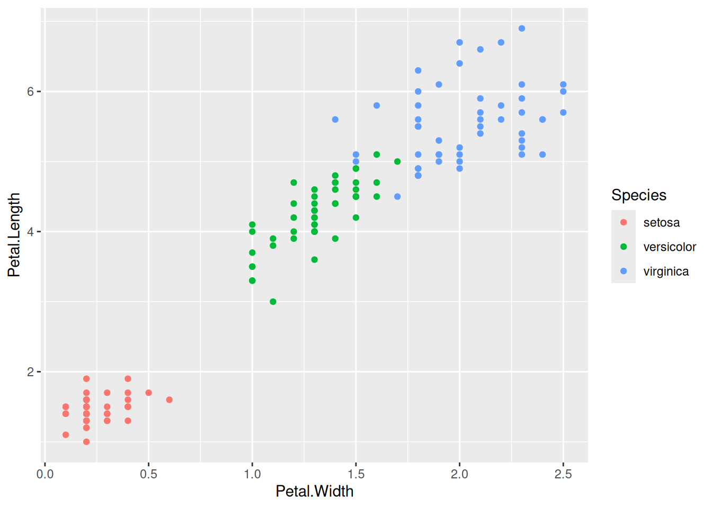
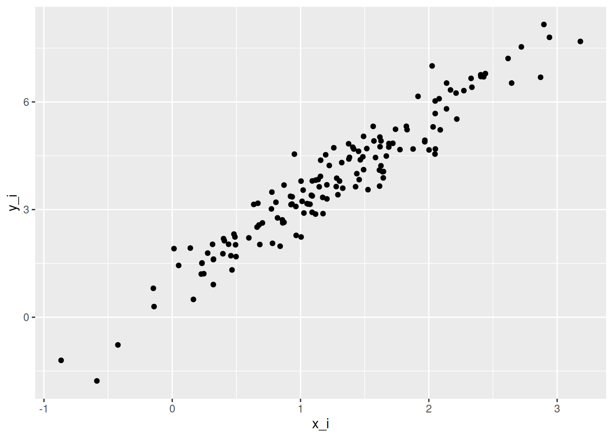

A correlation coefficient quantifies the strength and direction of an association between two variables. It is usually represented by the symbol \(r\) or \(\rho\) (Greek letter “rho”). The correlation coefficient ranges between -1 and 1, with 0 corresponding to no relationship, positive values reflecting a positive relationship (as one variable increases, so does the other), and negative values reflecting a negative relationship (as one variable increases, the other decreases).
The web app below shows 100 random points from a bivariate normal distribution for variables \(X\) and \(Y\). You can use the sliders to change the parameters of that distribution: the correlation (Greek symbol \(\rho\), “rho”), the standard deviation for \(X\) (\(\sigma_X\), “sigma X”), the standard deviation for \(Y\) (\(\sigma_Y\)), the mean of \(X\) (\(\mu_X\), “mu X”) and the mean of \(Y\) (\(\mu_Y\), “mu Y”). These five parameters are all you need to characterize a bivariate normal distribution.
Play around with the sliders until you have a conceptual understanding of the various parameters. Use the “new sample” button to get a new set of 100 randomly-generated pairs, and use “reset” to reset the parameter values to their defaults.
2.1.1 Bivariate application
There are different correlation coefficients that make different assumptions or that allow you to work with different types of data. To start, let’s consider the one most commonly used: the Pearson product-moment correlation coefficient, which can be applied to :interval or :ratio scale data. When you hear someone talk about a “correlation” without further qualification, they are most likely talking about a Pearson correlation coefficient. If we have the variables \(X\) and \(Y\) then we might use \(r_{XY}\) or \(\rho_{XY}\) as a symbol for the correlation.
There are multiple equivalent formulas for calculating a Pearson correlation coefficient. The most important one for us is
\[r_{XY} = \frac{cov_{XY}}{S_X S_Y}\]
because it can offer some conceptual understanding. The quantity \(cov_{XY}\) is the covariance between two variables, \(X\) and \(Y\), which is defined as
The above formulas are for calculating these statistics for the sample. When we want to estimate the corresponding parameters for the population we have sampled from, these formulas will have \(N-1\) instead of \(N\) in their denominators. The R functions cov(), var(), and sd() are used to compute these values on vectors or matrices.
Exercise: Calculate a correlation coefficient for variables in a data frame.
The data frame iris in R has measurements of different parts of 50 flowers from three different species of iris. See help("iris") for more information about this dataset.
Let’s compare this result with the result of the function cor().
cor(iris$Petal.Length, iris$Petal.Width)
[1] 0.9628654
2.1.2 Covariance matrix
Covariance matrices become very important once we start talking about multilevel modelling and multivariate analyses.
A covariance matrix (also known as the variance-covariance matrix) is a mathematical structure that describes the spread of a multivariate distribution. It is multidimensional analogue of the standard deviation.
To fully describe a univariate (single variable) normal distribution, you need to know only two parameters: the mean (\(\mu\)) and standard deviation (\(\sigma\)). Mathematically, this is often represented as
which is read as, “each case \(i\) of the \(X\) variable is drawn from a normal distribution with mean of \(\mu\) and variance \(\sigma^2\).
To fully describe a bivariate normal distribution, you need five parameters: the means of each of the two variables, their standard deviations, and their correlation. The mathematical way to represent the idea that pairs of observations for case \(i\), (\(X_i\), \(Y_i\)) are drawn from a normal distribution is:
Because the correlation of a variable with itself (\(\rho_{xx}\), \(\rho_{yy}\)) is always 1, we will often see \(\mathbf{\Sigma}\) written equivalently as
Note two things about the above matrix: first, the variances appear in the main diagonal, and the covariance appear off the main diagonal. Second, a correlation is not directional, and so \(\rho_{xy} = \rho_{yx}\), which means that the two off-diagonal elements have the same value.
Warning: \(\Sigma\) doing double duty
You may have noticed that the Greek capital letter \(\Sigma\) is used both to represent the instruction to add things together, e.g., \(\Sigma X\) = sum(X), and now it’s being used as a symbol to represent a covariance matrix \(\mathbf{\Sigma}\). In the latter case, \(\Sigma\) appears in boldface (compare \(\mathbf{\Sigma}\) to \(\Sigma\)). Usually the context will make things clear.
Tell me more about matrices
In mathematics, matrices are just generalizations of the concept of a vector: a vector can be thought of as having one dimension, whereas a matrix can have any number of dimensions.
is a 3 (row) by 3 (column) matrix containing the column vectors \(\begin{pmatrix} 1 \\ 2 \\ 3 \\ \end{pmatrix}\), \(\begin{pmatrix} 4 \\ 5 \\ 6 \\ \end{pmatrix}\), and \(\begin{pmatrix} 7 \\ 8 \\ 9 \\ \end{pmatrix}\). Conventionally, we refer to matrices in \(i\) by \(j\) format, with \(i\) being the number of rows and \(j\) being the number of columns. So a 3x2 matrix has 3 rows and 2 columns, like so.
\[
\begin{pmatrix}
a & d \\
b & e \\
c & f \\
\end{pmatrix}
\]
A square matrix is a matrix where the number of rows is equal to the number of columns.
Exercise: Generate a covariance matrix
Generate a covariance matrix corresponding to the relation between Petal.Width and Petal.Length for the iris dataset. Name your covariance matrix cvmx.
Solution
r_wl <-cor(iris$Petal.Width, iris$Petal.Length)sd_w <-sd(iris$Petal.Width)sd_l <-sd(iris$Petal.Length)cov_wl <- r_wl * sd_w * sd_l## bind together rows of the matrix using rbind()cvmx <-rbind(c(sd_w^2, cov_wl),c(cov_wl, sd_l^2))cvmx
When we have two variables, \(X\) and \(Y\), and our goal is to predict values of \(Y\) from \(X\), then we usually want to fit a linear regression model; or we might say, we want “to regress \(Y\) on \(X\).”
A simple regression model is of the form:
\[Y_i = \beta_0 + \beta_1 X_i + e_i.\]
In this equation, \(\beta_0\) and \(\beta_1\) are the y-intercept and slope parameters respectively, and the \(e_i\)s are the errors (the part of each \(Y_i\) left unexplained by the model). It is conventionally assumed that the \(e_i\) values are from a normal distribution with mean of zero and variance \(\sigma^2\); the math-y way of saying this is \(e_i \sim \mathcal{N}(0, \sigma^2)\), where \(\sim\) is read as “distributed according to” and \(\mathcal{N}(0, \sigma^2)\) means “Normal distribution (\(\mathcal{N}\)) with mean of 0 and variance of \(\sigma^2\)”.
2.2.1 Scatterplot
Let’s return to the iris data. Say we want to predict Petal.Length from Petal.Width. Before proceeding, it is a good idea to make a scatterplot of the data using ggplot2. We can use the colour aesthetic to capture what species a datapoint belongs to.
library("tidyverse")ggplot(iris,aes(x = Petal.Width, y = Petal.Length, colour = Species)) +geom_point()

Figure 2.1: Scatterplot of the iris data.
The plot looks like we could nicely fit a line through the cloud of points. Let’s do that.
2.2.2 Fitting a model using lm()
We use the lm() function (linear model) to fit regression models. It’s a good idea to look at the help file before using a function we’re unfamiliar with (type help("lm") in the console).
lm package:stats R Documentation
Fitting Linear Models
Description:
‘lm’ is used to fit linear models, including multivariate ones.
It can be used to carry out regression, single stratum analysis of
variance and analysis of covariance (although aov may provide a
more convenient interface for these).
Usage:
lm(formula, data, subset, weights, na.action,
method = "qr", model = TRUE, x = FALSE, y = FALSE, qr = TRUE,
singular.ok = TRUE, contrasts = NULL, offset, ...)
## S3 method for class 'lm'
print(x, digits = max(3L, getOption("digits") - 3L), ...)
Arguments:
formula: an object of class ‘"formula"’ (or one that can be coerced to
that class): a symbolic description of the model to be
fitted. The details of model specification are given under
‘Details’.
data: an optional data frame, list or environment (or object
coercible by as.data.frame to a data frame) containing the
variables in the model. If not found in ‘data’, the
variables are taken from ‘environment(formula)’, typically
the environment from which ‘lm’ is called.
Usually the first few arguments are the important ones we need to pay attention to. Here, the key ones are formula and data. We need to provide a symbolic description of the model. Under Details we see
Details:
Models for ‘lm’ are specified symbolically. A typical model has
the form ‘response ~ terms’ where ‘response’ is the (numeric)
response vector and terms is a series of terms which specifies a
linear predictor for ‘response’.
So we specify the model using response ~ terms, but we omit the intercept and the error term of the model because they are always implied. We also don’t name the regression coefficients; they get given the same names as the predictor variables. Thus our formula \(Y_i = \beta_0 + \beta_1 X_i + e_i\) just becomes Petal.Length ~ Petal.Width. The data argument tells the function the name of the data frame where the variables can be found. The result of the call to lm() is a fitted model object. We want to store the result so that we can perform further computations on the object. So altogether, our call might look like the following.
mod <-lm(Petal.Length ~ Petal.Width, data = iris)
Note that we chose the name mod, but this is arbitrary; we could have used any other variable name.
To see the results of the function, we use summary() on the model object.
summary(mod)
Call:
lm(formula = Petal.Length ~ Petal.Width, data = iris)
Residuals:
Min 1Q Median 3Q Max
-1.33542 -0.30347 -0.02955 0.25776 1.39453
Coefficients:
Estimate Std. Error t value Pr(>|t|)
(Intercept) 1.08356 0.07297 14.85 <2e-16 ***
Petal.Width 2.22994 0.05140 43.39 <2e-16 ***
---
Signif. codes: 0 '***' 0.001 '**' 0.01 '*' 0.05 '.' 0.1 ' ' 1
Residual standard error: 0.4782 on 148 degrees of freedom
Multiple R-squared: 0.9271, Adjusted R-squared: 0.9266
F-statistic: 1882 on 1 and 148 DF, p-value: < 2.2e-16
We are most interested in the table of coefficients here, which is the table of the regression coefficients for our model, the y-intercept \(\beta_0\) and the slope \(\beta_1\). We get \(\hat{\beta}_0 = 1.084\) and \(\hat{\beta}_1 = 2.230\). So with every 1 unit increase in Petal.Width, Petal.Length increases by 2.230.
We can see these value in the output, but we can also pull them out using code with the coef() function, which returns a vector with their values.
coef(mod)
(Intercept) Petal.Width
1.083558 2.229940
Recall that the errors in our model are from a normal distribution with a mean of zero and variance \(\sigma^2\), stated mathematically as \(e_i \sim \mathcal{N}\left(0, \sigma^2\right)\). The “residual standard error” for the model tells us \(\hat{\sigma}\), the estimated value of \(\sigma\). We can pull this out of the model object using the sigma() function.
sigma(mod)
[1] 0.4782058
2.2.3 Plotting the model fit against the data
It’s usually a good idea to plot the model fit against the data to see how well we are doing. Let’s re-create our scatterplot but use geom_abline() to add in a line with the slope and y-intercept for the model, which we can get using coef().
2.2.4 Getting other properties of fitted model objects
There are three other functions that useful to know. Each of these takes the fitted model object as the first argument.
function
description
predict()
generate predictions from the model
fitted()
get fitted values from the model
residuals()
calculate residuals
Fitted values, denoted by \(\hat{Y}_i\), are the predicted values for all the \(X_i\) in the data. Predicted values can be for any \(X_i\) values, even those not seen in the dataset.
Residuals represent the error of prediction, and are defined as \(Y_i - \hat{Y}_i\); i.e., the observed value for case \(i\) minus the fitted value for case \(i\).
2.3 Relationship between correlation and regression
We can calculate regression coefficients from correlation statistics and vice versa. To get regression statistics from correlation statistics, along with the correlation coefficient we need means of X and Y (denoted by \(\mu_x\) and \(\mu_y\) respectively) and their standard deviations (\(\hat{\sigma}_x\) and \(\hat{\sigma}_y\)). Let’s see how we can compute regression coefficients \(\beta_0\) and \(\beta_1\).
First, the slope of the regression line \(\beta_1\) equals the correlation coefficient \(\rho\) times the ratio of the standard deviations of \(Y\) and \(X\).
\[\beta_1 = \rho \frac{\sigma_Y}{\sigma_X}\]
If you play around with the bivariate web app you can verify for yourself that this is the case.
The next thing to note is that for mathematical reasons, the regression line is guaranteed to go through the point corresponding to the mean of \(X\) and the mean of \(Y\), i.e., the point \((\mu_x, \mu_y)\). (You can think of the regression line “pivoting” around that point depending on the slope). You also know that \(\beta_0\) is the y-intercept, the point where the line crosses the vertical axis at \(X = 0\). From this information, and the estimates above, can you figure out the value of \(\beta_0\)?
Well, for each unit increase in \(X\) you have a corresponding change of \(\beta_1\) for \(Y\), and you know that the line goes through the points \((\mu_x, \mu_y)\) as well as the y-intercept \((0, \beta_0)\).
Think about stepping back unit-by-unit from \(X = \mu_x\) to \(X = 0\). At \(X = \mu_x\), \(Y = \mu_y\). Each unit step you take backward in the X dimension, \(Y\) will drop by \(\beta_1\) units. When you get to zero, \(Y\) will have dropped from \(\mu_y\) to \(\mu_y - \mu_x\beta_1\).
So the general solution is: \(\beta_0 = \mu_y - \mu_x\beta_1\).
To close, here are a few implications from the relationship between correlation and regression.
\(\beta_1 = 0\) is the same as \(\rho = 0\).
\(\beta_1 > 0\) implies \(\rho > 0\), since standard deviations can’t be negative.
\(\beta_1 < 0\) implies \(\rho < 0\), for the same reason.
Rejecting the null hypothesis that \(\beta_1 = 0\) is the same as rejecting the null hypothesis that \(\rho = 0\). The p-values that you get for \(\beta_1\) in lm() will be the same as the one you get for \(\rho\) from cor.test().
2.4 Two approaches for simulating bivariate data
2.4.1 Approach 1: Simulating from the covariance matrix
You can simulate data from the normal distribution using the function rnorm(). The function rnorm() allows you to specify the mean and standard deviation of a single variable. How do we simulate correlated variables?
It should be clear that you can’t just run rnorm() twice and combine the variables, because then you end up with two variables that are unrelated, i.e., with a correlation of zero.
The package MASS provides a function mvrnorm() which is the ‘multivariate’ version of rnorm (hence the function name, mv + rnorm, which makes it easy to remember.
Caution
The MASS package comes pre-installed with R. But the only function you’ll probably ever want to use from MASS is mvrnorm(), so rather than load in the package using library("MASS"), it is preferable to use MASS::mvrnorm(), especially as MASS and the dplyr package from tidyverse don’t play well together, due to both packages having the function select(). So if you load in MASS after you load in tidyverse, you’ll end up getting the MASS version of select() instead of the dplyr version. It will do your head in trying to figure out what is wrong with your code, so always use MASS::mvrnorm() without loading library("MASS").
Have a look at the documentation for the mvrnorm() function (type ?MASS::mvrnorm in the console).
There are three arguments to take note of:
arg
description
n
the number of samples required
mu
a vector giving the means of the variables
Sigma
a positive-definite symmetric matrix specifying the covariance matrix of the variables.
The Sigma argument to MASS::mvrnorm() plays an analogous role to the sd argument in rnorm(); it specifies the spread for the two variables.
Exercise: Simulate bivariate data using MASS::mvrnorm().
Solution
2.4.2 Approach 2: Simulating from the regression model
Another way you can simulated data is based on a regression model. This way is pretty straightforward because we just follow the \(Y_i = \beta_0 + \beta_1 X_i + e_i\) formula.
first, simulate the \(X_i\) values
calculate the predicted value from the model
add random error to the prediction using rnorm() to yield \(Y_i\)
Let’s use this approach to simulate data from the iris dataset. First, let’s get the coefficients and the estimate of \(\sigma\).
We’ll create the \(X_i\) values in a vector first. We have to decide on the number of paired observations we want; let’s say 150, the same number as in the original dataset. Let’s set the seed before we do any random number generation.
set.seed(1451)iris_x <-rnorm(150, mean = iris_mu_x, sd = iris_sd_x)
Now let’s use the tibble() function (from tidyverse) to create the \(X_i\) values in a data frame, followed by the predicted value, y_hat, followed by the errors, e_i
ggplot(sim_iris,aes(x = x_i, y = y_i)) +geom_point()

This looks fairly similar to the original data, but note that we haven’t taken into account the species of flower, so the points are spread evenly across the x dimension, unlike in Figure Figure 2.1 above. So our model is good, but not really complete.